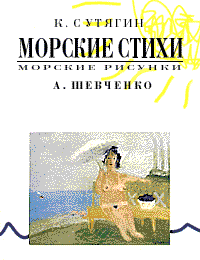

Пятибальная оценочная шкала - воистину одно из самых глубоких философских прозрений в современном профаническом обществе. Подумать только: кол, неудовлетворительно, удовлетворительно - казалось бы, чего же боле? ан нет, - далее хорошо, а после и вообще отлично. Но не будем отвлекаться.
Олег Попов, Владимир Белобров - с такими рифмующимися фамилиями сам Бог велел какое-то время заниматься совместным творчеством. Пять, как говорится, баллов! К тому же просочилась информа, что эти двое работают ведущими на Радио-Ракурс, а также играют некие блюзы в группе "Unia freen-kiss". Мы не слыхали, но и это - тоже хорошо.
На конкурсе "Тенета-98" Попов с Белобровым вообще сорвали куш с сознания сетевиков. В категориях "Рассказы" - третье место с вещью "Радость от ума", в "Пиесах" - первое место с интермедией "Возбужденный маньяк", в "Фантастике" - пятое с "Грузом ВКЖ-65". Сетевой люд, безусловно, удовлетворен, хотя и не прошел в топы сборник прозы "Почему Не Спит Лось" и повесть "Король обезьян".
Проза и поэзия Попова/Белоброва заставляет читателя смеяться, впадать в детство, вспоминать пионерлагеря и пускать слюнные пузыри целыми гирляндами. Удивляет ситуация, что на "Тенетах" авторы проникли во все номинации, реально претендуя разве что на пять первых мест в категории "юмор". Их жанр - стёб. Стёб именно в постмодерновском качестве, абсолютизированный (как стебутся все мэтры: от Тарантино до Сорокина, от Гринуэя до "Хуй Забей"). Разве что фигуры типа М.Мэнсона или БГ привносят в свой стёб элементы трагизма и осознанности, у Попова/Белоброва в этом смысле - отказ/запор. Вообще их стиль мог бы быть выражен формулой: корень из Хармса, перемноженный на Мамлеева, поделенный на 77-й стих "Дао Дэ Цзин", предварительно обработанный до лапидарной идеограммы в духе Романа Карцева. Конечно, смешно, но, пацаны, вам кол. Отдельное спасибо за встреченные у вас редкости/красоты: профура, дятел штопанный, суеплёт, широта диапазона мировоззрения, набанданга и др. Классно это, но не даосизм еще, нет. С медико-психологической точки зрения проза авторов может сравниться с сенсорным барьером, осевыми рефлексами, иногда с перинатальным повреждением мозга. Может, но это не так. Нет, это - тихое веселье двух скучающих друзей.
Так отдохнем же от М.Павича и ему подобных!
Говорят, что книга К.Сутягина и А.Шевченко "Морские стихи" - это плод усилий Попова/Белоброва ("Красный матрос", СПб, 1999).
|  |
|
Отлично. Плюс графика в духе "Картинок-валентинок", столь любимых в рунете.
Есть в этих стихах дух легкости и беззаботничества.
Сборник В.Белоброва "Беседа с ушами" - это подборка 1991-98 гг., демонстрирующая рост и перерастание одаренного мальчика в даровитого мужа. не стану цитировать, отмечу лишь перлы: "Холодная курица", "Я иду по глобусу", "Дымок", "Морозно", "Беседа с Ушами", "Бывает так" (best!), "9 шагов", "Ты", "3 будды", "Варианты" (super!), "Глаз", "Огурцы", "Тютчев", "27 января", "Случай".
В общем и целом такая поэзия, в чем-то близкая к примитиву митьков, в чем-то к обэриуту Олейникову, безусловно вносит в современную культуру элемент доброго и осмысленного, я бы даже сказал, телеологически безупречного похуизма.